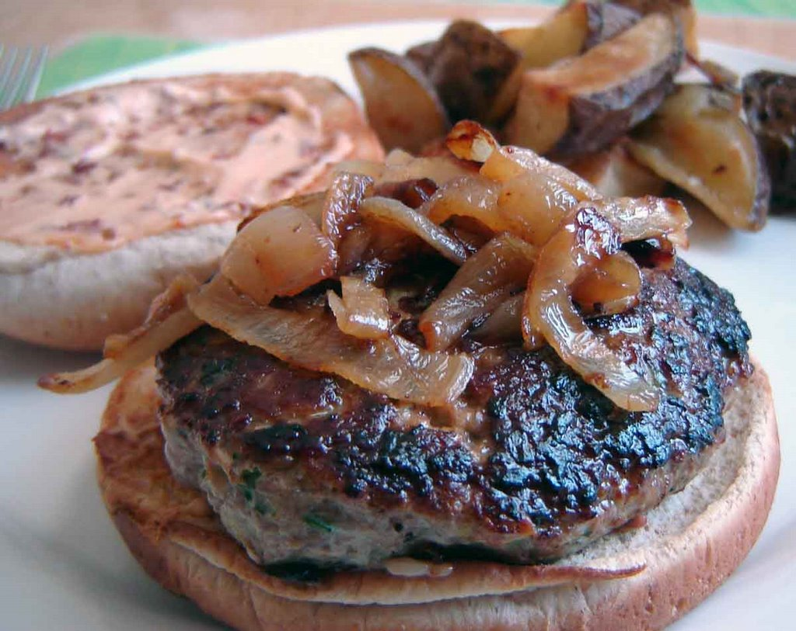

Home
Turkey Burger

This turkey burger recipe is the best.
After making them the first time
my husband said "no more" to beef
burgers. These are full of flavor — any
cooking method may be used, and they freeze
very well. The recipe can
also be used for meatballs or meatloaves.
Whether you've been searching for the best turkey burger,
need to use up the ground turkey lurking in your freezer,
or are simply tired of beef burgers, boy, do we have the
recipe for you. Gone are the days of boring, dry, and
lacking-in-flavor turkey burgers thanks to this 5-star creation.
Trust us, this turkey burger recipe has earned
over 1,500 5-star reviews and it will certainly
be your new go-to recipe.
Ingredients
- 3 pounds ground turkey
- ¼ cup seasoned bread crumbs
- ¼ cup finely diced onion
- 2 egg whites, lightly beaten
- ¼ cup chopped fresh parsley
- 1 clove garlic, peeled and minced
- 1 teaspoon salt
- ¼ teaspoon ground black pepper
Steps:
- Gather all ingredients.
- Mix ground turkey, seasoned bread crumbs,
onion, egg whites, parsley, garlic, salt,
and pepper together in a large bowl.
- Form into 12 patties.
-
Cook the patties in a medium skillet over medium heat,
turning once, to an internal temperature of 180 degrees
F (85 degrees C).
- Serve hot and enjoy!